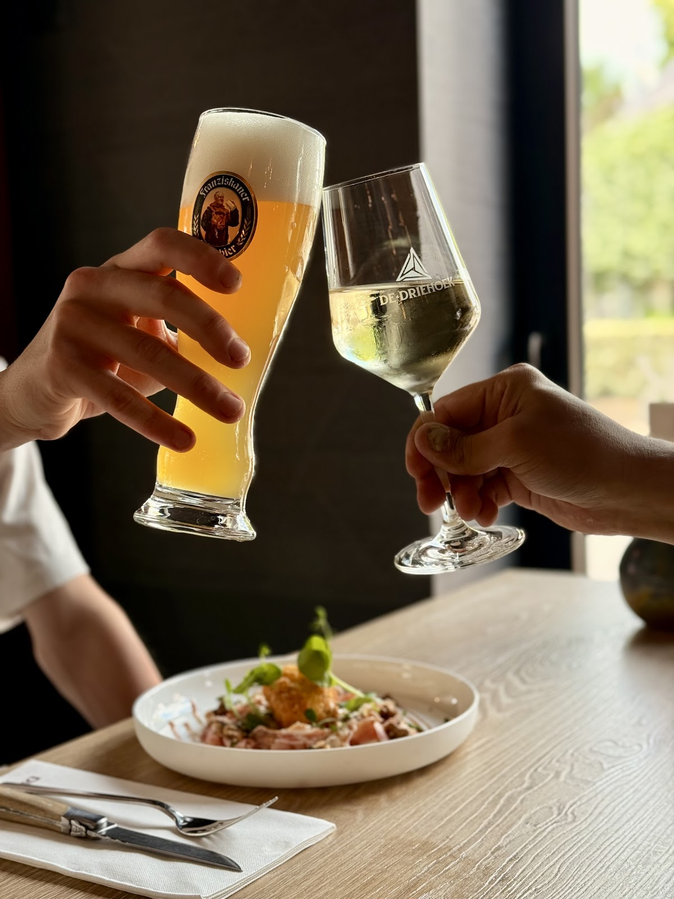
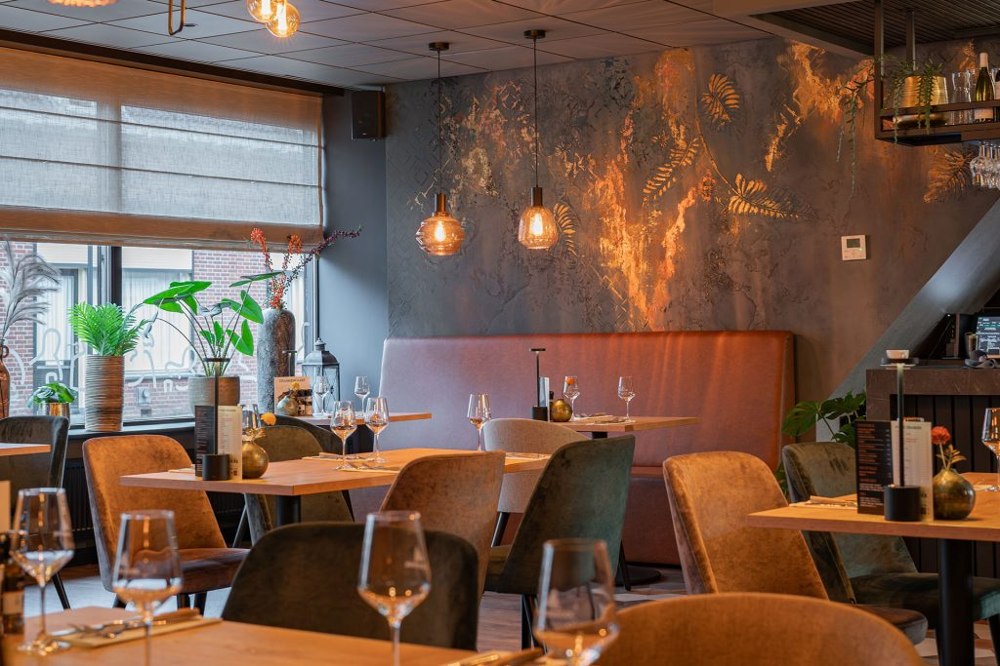
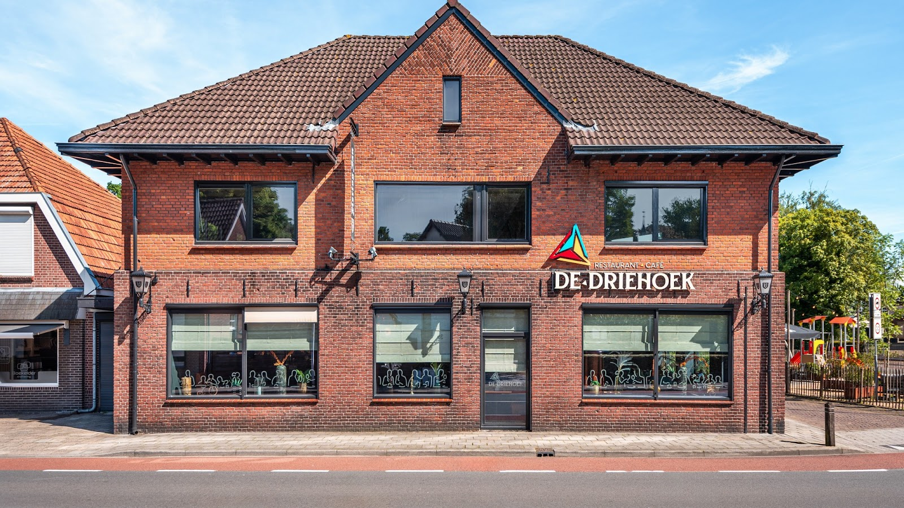
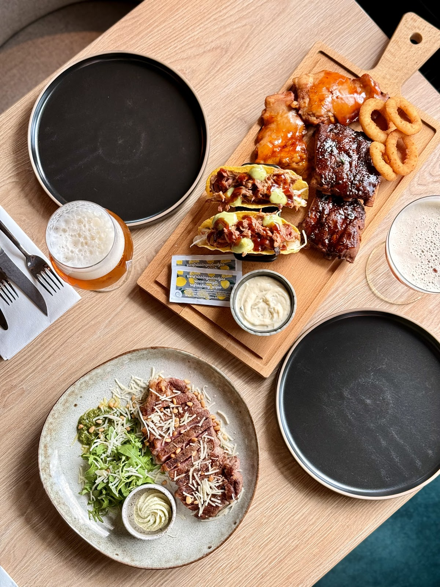
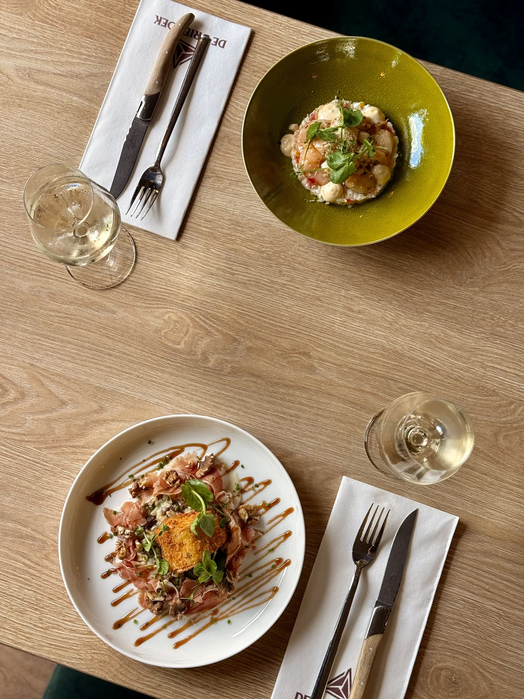
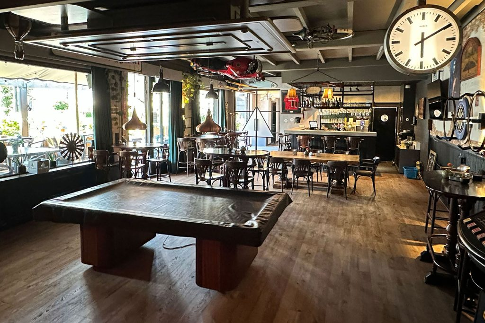
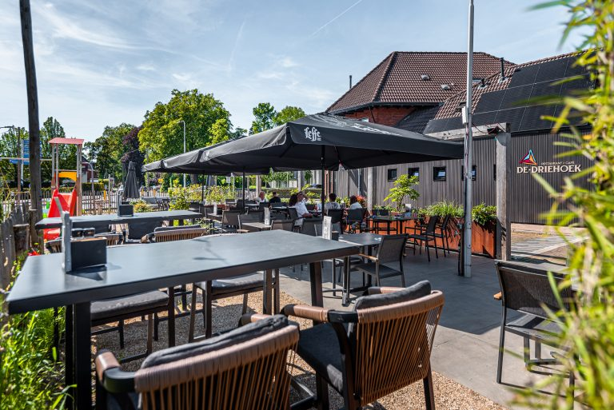
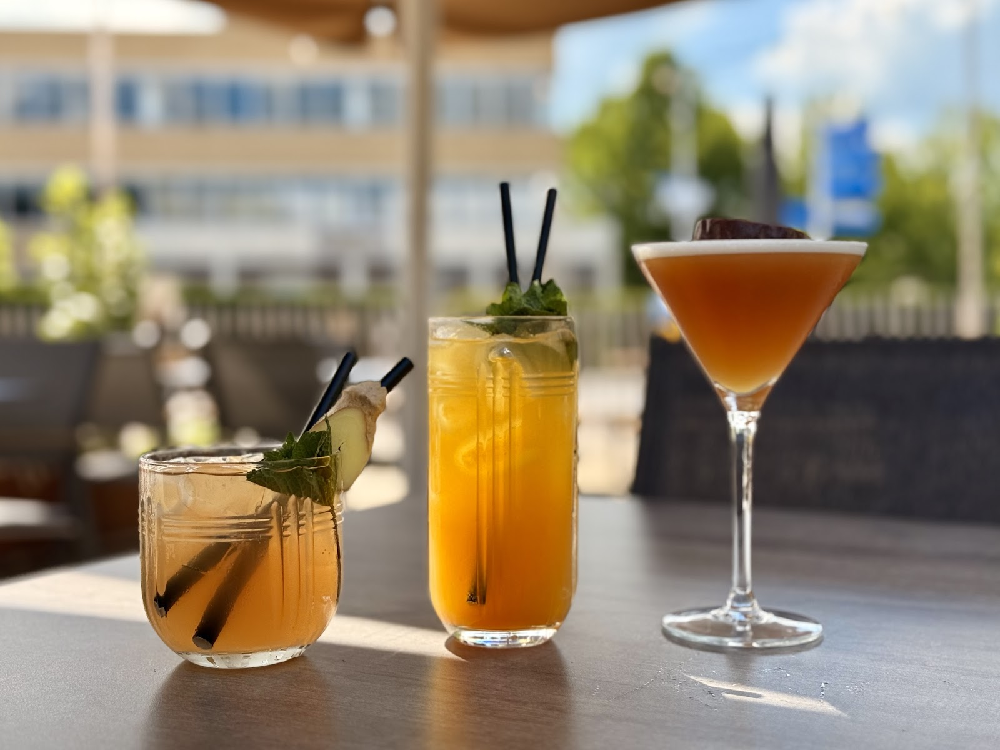
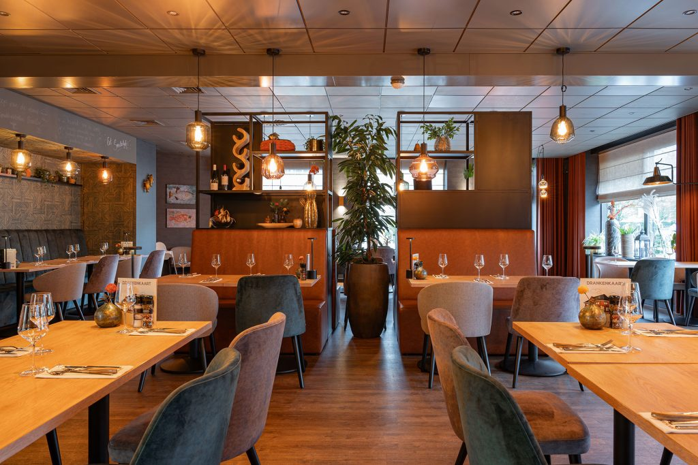
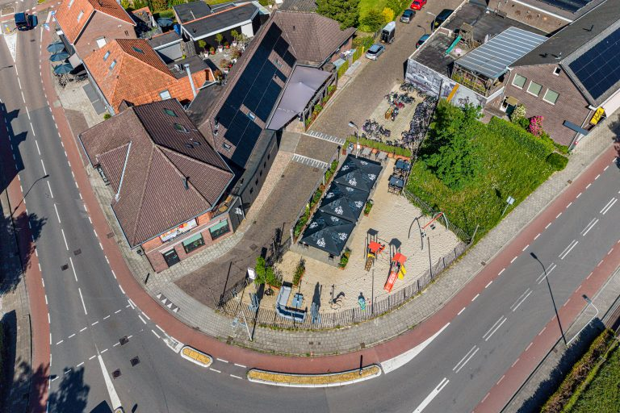

Café-restaurant in Lichtenvoorde
Gewoon erg lekker eten.
Een eerlijke kaart, een goede prijs en een gastvrije tafel. In het ruim 100 jaar oude pand op de hoek van de Lievelderweg, van lunch tot late borrel.
4,5 uit 257 Google-reviews

Binnenkort bij
De Driehoek
- 12nov Hap en Stap LichtenvoordeBel voor info
- 20nov De Zwarte Lotus Escape DinerBel voor info
- 24dec Kerst bij De Driehoek24, 25 en 26 decemberReserveer op tijd


Een vertrouwde plek, met nieuw elan.
Bijna 40 jaar lang stond de familie Peters aan het roer van De Driehoek. Hun biefstuk werd legendarisch, in de hele Achterhoek en ver daarbuiten.
Begin 2023 namen twee jonge Lichtenvoordse uitbaters het stokje over. Na een grondige verbouwing heeft het karakteristieke pand een eigentijds interieur, een gezellige bar, een open keuken en 75 comfortabele zitplaatsen.
"Gewoon erg lekker eten en drinken met een juiste prijs-kwaliteitverhouding, in een gastvrije en sfeervolle locatie."
Van de kaart
Niet te uitgebreid, wel met zorg bereid. Een greep uit ons à la carte menu. Hoofdgerechten komen standaard met aardappelgarnituur, rauwkost en mayonaise.
Laat u verrassen
Vijf gangen bites arrangement
Vijf gerechten ter grootte van een tussengerecht, samen een compleet diner. Elke 4 weken een nieuw menu met seizoensproducten. Per tafel, vanaf 2 personen.
€ 57,50 p.p.
€ 77,50 met wijnproeverij


Voorgerechten
- Carpaccio15
Truffelmayonaise, pesto, Old Amsterdam, pijnboompitten
- Mosterdsoep9
Corndog, BBQ saus, mosterd, gefrituurde uitjes
- Steak tartaar15
Bieslook, gepocheerd ei, toast
- Proeverij van voorgerechten15,5
Carpaccio, gamba, champignon dordogne, mosterdsoep
Hoofdgerechten
- Biefstuk van de haas37,5
Saus en garnituren naar keuze
- Spareribs25,5
Honey BBQ
- Eendenborstfilet24,5
Paddenstoelenrisotto, geglaceerde wortel
- Bietwellington (vega)23,5
Aardappelmousseline, walnoten, balsamico
- Schnitzel (bovenbil)25
Saus en garnituren naar keuze
Platters en burgers
- Classic platter27 p.p.
Spareribs, porkwings, moinkbal, burger, maisribs, uienringen
- Surf & turf platter30 p.p.
Spareribs, porkwings, zalm, gamba, maisribs, uienringen
- Black Angus burger21,5
Tomatenrelish, chipotle mayonaise, bacon, pickles, sla
Desserts
- Dame blanche8
2 bollen vanille-ijs, warme chocoladesaus, slagroom
- Cheesecake9
Passievrucht, vanille-ijs
- Koffie gourmand11
Koffie met diverse kleine desserts
Lunch vanaf 12.00 uur op vrijdag, zaterdag en zondag: broodjes, uitsmijters, het 12 uurtje en de 3 Hoek lunch. Dieetwens of allergie? Meld het een dag van tevoren bij uw reservering.
Reserveer een tafelEen biertje, een potje biljart.
Ook voor een borrel bent u welkom. Met de buurt, collega's of familie: Achterhoekers weten de sfeer hier al decennialang te waarderen.
Bijkletsen, een kaartje leggen of een spelletje darts, met een vers getapt pilsje, een goede wijn en de borrelhap erbij. En met 3 professionele biljarttafels is het café een walhalla voor liefhebbers van het spel op het groene laken.
- 3 biljarttafels
- Darts
- Groot terras



Iets te vieren? Wij maken er een feest van.
Receptie, jubileum, verjaardag, buurt- of bedrijfsfeest: ieder feest is anders. We combineren zaalruimtes, regelen arrangementen en passen de planning aan. We denken graag met u mee.

Feesten en partijen
Van een kleine receptie tot een groot gezelschap. Bel ons en we bespreken alle mogelijkheden.
Bespreek uw feestCatering
Bij u thuis, op het bedrijf, in de vriendenclub of bij ons op het terras. Kies uit 10 buffetten, vanaf 8 personen.
- Buffet Basis
- Buffet Luxe
- Texas Style
- Italiaans
- Stamppot
- Broodjes
- Lunch
- Lunch Luxe
- Live BBQ
- Live BBQ Oklahoma Smoker
Activiteiten
Maak van uw teamuitje, personeelsfeest of familiedag iets bijzonders, met onze spelbegeleider erbij.
Pubquiz, Wie is de Mol, Highland Games, Casino night, Moordspel, Expeditie Robinson, Bubbelvoetbal, Hunted, E-hopper tocht en meer
Vraag een activiteit aanWat gasten zeggen
4,5uit 257 Google-reviews
"Verrassend goede keuken met een niet te uitgebreide kaart. Wat er op staat is van goede kwaliteit en wordt ook zeer goed bereid!"
"Leuk restaurant, vriendelijk en alert personeel. We hebben heerlijk gegeten. Prima tot flinke porties. Een aanrader. Tot de volgende keer, bedankt voor de fijne avond."
"We waren onderweg van een dagje weg en op zoek naar een tentje waar je lekker normaal avondeten kan tegen een redelijke prijs. Ik was sceptisch om dit te vinden maar het is toch gelukt. De driehoek is een leuke zaak met leuk personeel en goede prijs kwaliteit verhouding qua eten. Wij hebben heerlijk met z'n 3tjes geget"
"Gezellig! Vlotte bediening, ondanks de volle bezetting. We hebben smaakvolle spareribs en een schnitzel met gebakken aardappelen en rauwkost gegeten. De rekening werd origineel gepresenteerd geklemd op een plankje, inclusief een heerlijke, vrij grote pepermunt en een hamertje om hem te breken."
Tot aan de Lievelderweg.
Reserveren gaat het snelst telefonisch. Mailen kan natuurlijk ook.
De Driehoek Lievelderweg 27131 MC Lichtenvoorde Route in Google Maps
Openingstijden
- Maandag
- 16.00 - 00.00
- Dinsdag
- gesloten
- Woensdag
- 16.00 - 00.00
- Donderdag
- 16.00 - 00.00
- Vrijdag
- 12.00 - 00.00
- Zaterdag
- 12.00 - 00.00
- Zondag
- 12.00 - 22.30
Parkeren
Komt u met de auto? Parkeer dan graag aan de overkant, op het terrein van Vitelco leather. Alvast bedankt.
